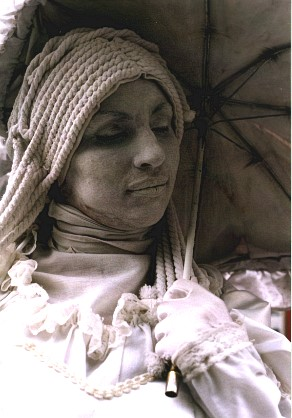
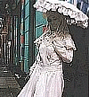

|  |  |  |  |  |
|
 |
 |
White Wedding 60 canvas boards, 60 cut-out pin-ups, 60 linoleum prints using glow-in-the-dark oil paint, 500 watt halogen light on timer 2003 This 'living statue' in Buenos Aires was the inspiration for the white wedding installation. My approach to the world is mostly visual. I watch a bit more than I listen. I'm an observer. I notice details. I'm interested in imagery related to female identity that finds no equivalent in male imagery. Does it seem that there are fewer visual representations associated with male identity? This installation contrasts imagery from two of society's female stereotypes: the white virgin and the pin-up. |
The White Wedding installation was part of the program for the final two weeks of the month.
|
Those visiting the installation entered a pitch-black dark room where Billy Idol's 'White Wedding' blared loudly.
On the wall in front of them were 60 glowing pictures of identical white wedding dresses (linoleum prints, glow-in-the-dark paint on canvas board). |
 |
|
A bright light on the ceiling illuminated the room for two seconds. The audience caught a brief glimpse of 60 very different, beautiful and naked women before the light went back off and
the identical glowing white wedding dresses glowed again for 10 seconds (difficult to photograph this).
Other paintings / installations using glow-in-the-dark-paint to create a layered experience: Geisha Masks On the Surface |